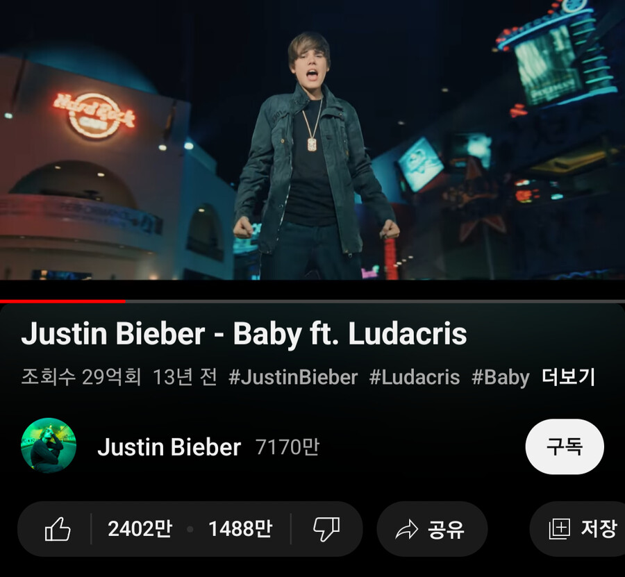
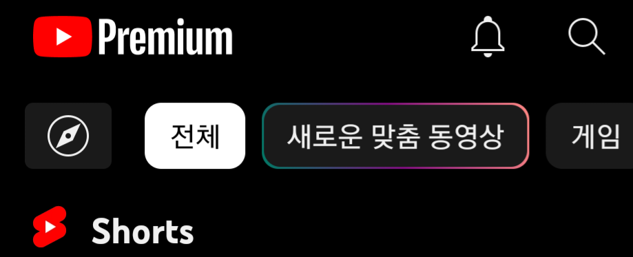
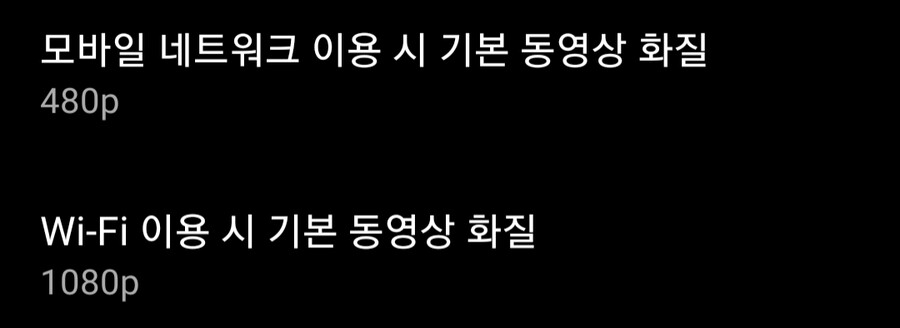
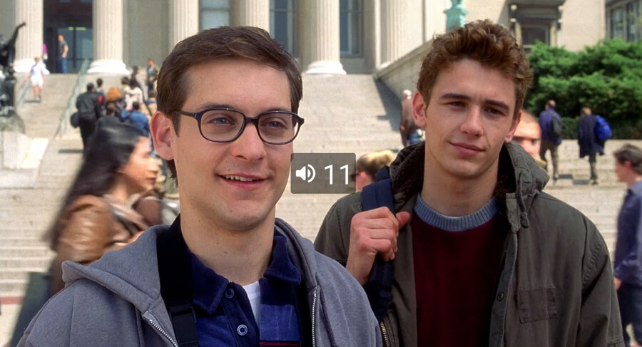
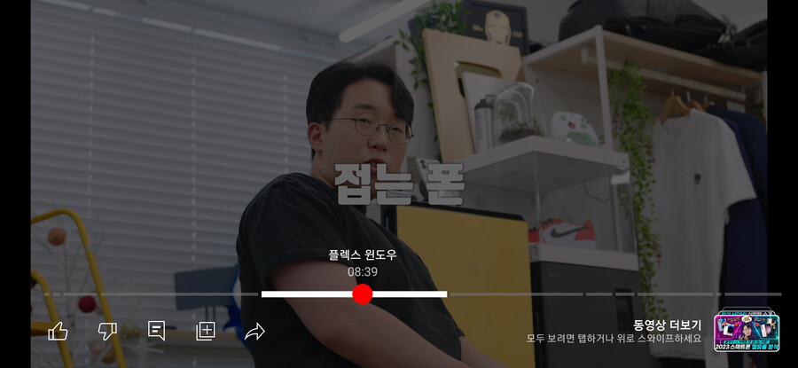
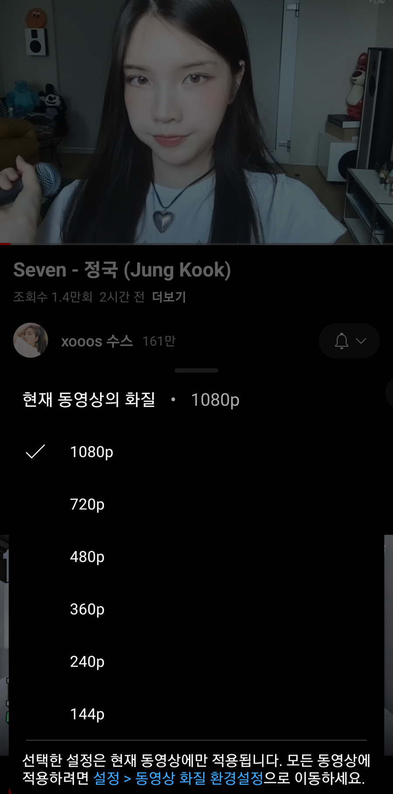
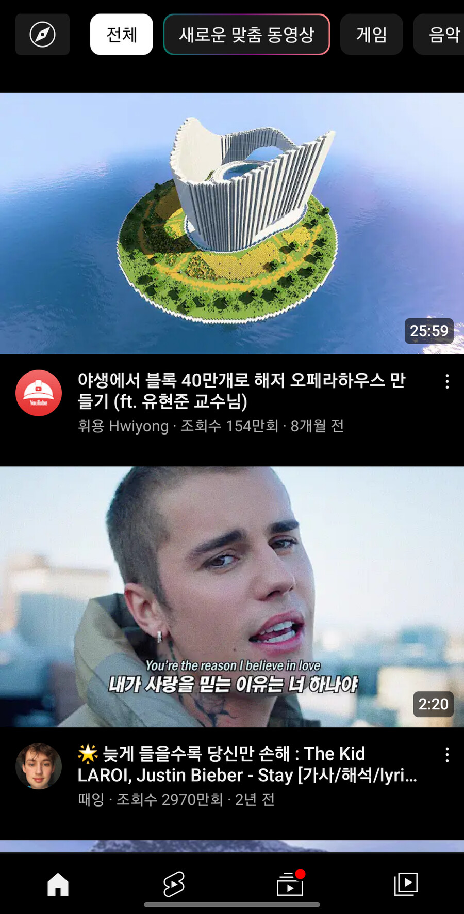

요즘 유튜브 어플이 개불편하게 업데이트 되면서 유튜브 리밴스드 사용자가 늘어났다
많은 사람들이 이 어플은 불법이라면서 사용을 꺼려하지만 결론부터 말하자면
불법이 아니다
유튜브 리밴스드는 유튜브 어플을 개조해서 사용하는 것으로
개조된 어플을 배포하는 것은 저작권법에 걸리지만 개인이 개조툴로 어플을 개조해서 쓰는 것은
인터넷의 애드블록을 쓰는 것과 같이 법에 걸릴 것이 없다는 것
프리미엄에 붙은 기능을 공짜로 쓸 수 있게 해주는 편법 어플 아니냐고 하는데
프리미엄을 쓰는 것보다 훨씬 더 편하고 많은 기능들을 쓸 수 있다
그럼 유튜브 리밴스드에 무슨 기능이 있는지 살펴보자

당연히 광고는 안 나온다
영상을 틀면 나오는 광고는 물론 홈화면, 영상 밑에 나오는 팝업 광고 같은 것도 없앨 수 있다
그냥 없앨 수 있는 것도 아니고 없앨 광고를 사용자가 직접 설정할 수 있다
그리고 싫어요 수가 보인다
이로 인해 코딩 정보 영상이 쓸만하고 믿을만한 정보인지 확인할 수 있게 됐다

상단 유튜브 로고를 프리미엄으로 바꿀 수 있다

네트워크 종류 별로 기본 화질을 정할 수 있다
기존 설정으로는 높음, 보통, 낮음으로 정할 수 밖에 없다면
리밴스드에서는 정확하게 화질을 정할 수 있다
기존 유튜브 앱에서는 영상을 틀면 화질이 (자동)으로 맞춰지면서 들쑥날쑥 고정이 안 되지만
이렇게 리밴스드로 기본 화질을 설정하면 사용자가 다른 화질로 바꾸기 전까지 기본 화질로 고정이 된다

스와이프로 밝기, 음량을 조절할 수 있다
왼쪽을 스와이프하면 밝기, 오른쪽을 스와이프하면 음량을 조절할 수 있다

터치로 재생바를 조작할 수 있다
기존 앱애서는 재생바를 스와이프 해야 조작이 가능했지만
리밴스드에서는 터치로 조작이 가능하게 롤백했다

기존 앱에서는 화질을 바꾸려면 (고급) 버튼을 눌러야 했는데
리밴스드에서는 그런거 없이 그냥 화질을 바꿀 수 있다
'높음, 보통, 낮음' 이런 창이 안 보이고 바로 고급 설정으로 들어가지게 롤백 된 것

마지막으로 눈에 보이는 모든 버튼들을 없앨 수 있다
유튜버도 아닌데 가운데에 떡하니 있는 만들기 버튼이 마음에 안 든다면 없애면 되고
영상 하단에 있는 클립, 리믹스, 땡스 같이 안 쓰는 버튼들을 없앨 수 있다
이외에도 정말 많은 기능들이 있어서 설정을 들어가면 복잡할 정도라서 하나하나 소개하지 못했다
사용자가 "이게 왜 안 되지?", "이렇게 하면 정말 편할 것 같은데"라고 할만한 기능들을 전부 넣은
정말 무시무시한 어플이다
참고로 모든 기능들은 켜고 끌 수 있어서 리밴스드를 기존앱과 똑같이 사용하는 것까지 가능하다
근데 오프라인 저장은 리밴스드의 기능이 아니라 다른 유튜브 다운로드 어플이랑 연동하는 거라서 소개 안 함
유튜브 프리미엄을 쓰는 것보다 리밴스드를 쓰는 것이 훨씬 편하긴 하다
광고를 없애는 시점에서 프리미엄을 공짜로 쓰는게 아니냐는 부정적 시각도 많지만
본인은 그냥 애드블록 사용한다는 느낌으로 사용 중이다...
안드로이드 사용자라면 한번쯤 체험해보는 것도 나쁘지 않다
업데이트 해오다 귀찮아서 그냥 결제함 ㅠㅠ
유튜브 뮤직도 써야해서